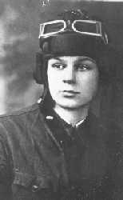

"ДОЗОР" ПОДО РЖЕВОМ
"Что такое война - знают те, кто не знает войну.
А кто знает - тому о ней трудно судить однозначно.
Это ж - как океан, который всегда озадачивает."
"Мы ищем не кости, мы ищем личности".
Сознание участника военного поиска во многом сближает его с сознанием участника войны 1941-1945 годов. И тот, и другой знают о войне нечто, скрытое от непосвященных. И тот, и другой ориентируются в мире бытовых мелочей, известных лишь участникам боевых действий, и тот, и другой поименно помнят павших.  В последний год один из нас, отдавших поиску три десятилетия, все чаще и чаще ловит себя на ощущении, что среди тысяч найденных нашим отрядом павших есть человек, с которым остро хотелось бы подружиться... Хотя бы посидеть и наговориться вдоволь. Имя этого человека - Борис Елкин, Борис Васильевич, ленинградец, 1922 года рождения. (Найден отрядом около дер. Клетки под Волоколамском, похоронен у дер. Новлянское). Сегодня, будь он жив, наша разница в возрасте - девять лет - была бы совсем незаметна. Борис окончил десятилетку в сороковом году, хорошо учился и мечтал об авиационном институте в Москве, но сразу после окончания школы был призван в армию. Его служба в 1940 году началась в Литве, где он стал механиком-водителем. В первых своих письмах домой он пишет: "Здравствуйте все. Ехал несколько суток. Проехал через всю Прибалтику, ехал через Польшу, побывал в крупных городах. Купить ничего не смог на русские деньги. Сейчас стою в Литве на Прусской границе. Служу в авто-мех и бронетанковых частях. Получил амуницию танкиста: шинель, шлем, гимнастерку, диагоналевые шерстяные брюки и русские сапоги. Кормят хорошо. Встаем в 6 ч. утра, отбой в 11 ч. ночи. Получать буду 7 лит. Народ в городе одет модно. /.../ Я уже вожу самостоятельно машину. Обучают сразу водить. Все обучение идет в ускоренном темпе, чтобы сразу машины могли идти, куда надо. Я слыхал, что в Ленинграде мало продуктов, так что посылку не присылайте. Еды хватает. В день съедаю до 2 кг хлеба... Сахару дают три куска на пятидневку, поэтому прикупаю. Чай пью миску в три стакана с черными сухарями.
Купил вечную вставочку за 4 лита, черную с зеленым перламутром. Советские деньги, наверное, пойдут с января. 12 января я буду первый раз выбирать в Верховный Совет Литовской ССР. Из всех ребят я самый молодой и рослый. Есть хорошие ребята. Пока не курю. И не пью. Махорка воняет неприятно. /.../ Через два часа пойду на пост, в самое темное время. Ночи жутко черные, в пяти шагах ничего не видно. Охраняем государство и себя. Здесь были случаи нападения на посты." В декабре 1940 года Бориса направили на десять месяцев в школу младших командиров. Он надеется через год (!) поехать в отпуск, а пока - "стоят морозы, когда драишь двигатели бензином, не успеешь вытащить руку из ведра, пальцы становятся, как колобахи..." С фотографии смотрит очень спокойный светловолосый парень в танкистском шлеме и куртке, с силуэтами танков на петлицах гимнастерки. "В нем было большое обаяние,- пишет о нем его школьная ровесница,- вместе со скромностью, благородством. Это очень привлекало к нему всех... А девочки моего класса даже сочинили о нем поэму в стихах. /.../ Вобщем, Боря Елкин был чудесный, очень порядочный и скромный юноша, прекрасный товарищ. Когда мы узнали в блокаду, что он пропал без вести, то все очень горевали, и до сих пор переживаем его гибель". Можно только догадываться, каков был жизненный путь Бориса, встретившего войну на Западной границе. Сержантом он так и не стал. "За время войны пришлось быть и связистом, и стрелком, и артиллеристом, много пришлось пережить... Попал после очередного ранения в пулеметную роту. Жалею, что не по специальности. Но все еще впереди." Это письмо - в первый день Нового 1942 года. Меньше, чем через месяц, Борис и его товарищ Павел Колокольчиков подорвались на минах у околицы недавно освобожденного от немцев села, разминируя луг. Кто-то из них подорвался первым, кто-то пошел выносить и разделил его участь. Похоронили их рядом, и через 45 лет местная жительница, хозяйка дома, где жили в 42-м ребята, узнала Бориса по фотографии. При переносе останков мы видели красный свитер, видимо, тот самый, который ему прислали из дома, и высокие сапоги-бурки /"после ранения труднее переносить мороз и холод"./ Для нас Борис Елкин почему-то прочно ассоциируется с Володей Третьяковым из повести Григория Бакланова "Навеки девятнадцатилетние". Многое совпадает: то же поколение, та же человечность как душевная основа личности, та же судьба, что и у полутора миллионов его ровесников, навеки девятнадцатилетних... Поговорить бы с ним... * * *Мы уйдем в заснеженные степи, - писал Юрий Белаш от имени этого поколения,-
И, навеки затерявшись в них,
Никогда уж больше мы не встретим
Ни друзей, ни близких, ни родных.
Будут вьюги шелестеть над домом,
Будут годы время бороздить,
Только нам по улицам знакомым
Никогда уж больше не ходить.
И ремень затягивая туже,
Не ступить на стылое крыльцо.
И как прежде - и ветрам и стужам
Не подставить юное лицо.
Жизнь иная явится на свете...
И она придет на смену той,
Что ушла в далеком 43-м
По степной дороге фронтовой.
Нас не будет в этой жизни дальней,
Навсегда затерянных в степи...
Оттого снег сухо и печально
Под ногой истории скрипит.
(Юрий Белаш)
Провоевать в жестоком бою
день - можно,
два - трудно,
три - почти невозможно:
убьют или ранят.
(Юрий Белаш)
Для полкового командования мера иная: видны роты, взводы, их пути и их
судьбы, видны командиры. Солдатская судьба практически не рассматривается.
Только цифры.
На фронте страшно не то, что людей убивают.
Страшно, что смотрят на это, как на обычное дело.
(Юрий Белаш)
Для высшего командования, что нашего, что немецкого - человек, особенно
невысокого чина - и вовсе не виден. О своих солдатах говорят на широком
уровне обобщения: "бравые силезцы", "героическая пехота". Мыслят массовыми
категориями, и хорошо еще, если помнят отдельных офицеров. О неудачах своих
войск предпочитают не вспоминать, тем более - не упоминать в мемуарах.
Именно поэтому, вероятнее всего, никто из советских военачальников до сих
пор не написал о боях подо Ржевом, как будто этих событий и не было.
Но есть еще четвертая позиция - дом, где знают и любят ушедшего на фронт
человека: "Прошло столько лет, мы уже потеряли всякую надежду, что найдут
моего отца... Внешность отца: носил усы, рост 180 см, и был всегда
пострижен "наголо". Работал в колхозе конюхом. За отца я остался работать.
Мне было где-то 16 лет, я отца проводил на фронт летом 1942 года".
Страница перевернута, и никто не расскажет, что думал Курамша Ахтиярович,
пряча свой самодельный медальон в нагрудный карман гимнастерки.
Другой пласт событий был поднят нами в связи с находками в Коростелевском
овраге. Есть такой небольшой овражек слева на восемнадцатом километре
Селижаровского тракта, считая от Ржева. До войны там вдоль дороги стояли
дома Нового Коростелева, стояла и школа, был магазин. Примерно в километре -
дома Старого Коростелева. Кто-то из его жителей в 1989 году сообщил нам о
том, что в овражке, когда были мальчишками, видели человеческие кости. Мы
предприняли разведку - и почти сразу нашли останки семерых красноармейцев,
из них пятеро были с медальонами, которые удалось прочитать. Это - ездовые
Ефрем Тилиликин, Петр Боярских, Сергей Чуфаров, разведчик Максим Вагин,
телефонист Аристарх Кожевин. Другие останки - безымянны, и можно только
догадываться, кому они принадлежат - младшему лейтенанту Борису Гарберу или
разведчику Михаилу Серкову, чьи имена мы позже узнали из архивов.
Раскапывая овражек, мы увидели, что земля в нем насыщена человеческими
костями и их мелкими обломками. Среди них выделялись массивные кости
упряжных лошадей, черепа с удилами и обломки артиллерийских повозок. И
снова мы обратились к литературе, к архивам. Стала вырисовываться общая
картина событий.
В первой половине января 1942 года Калининский фронт начал Ржевско-Вяземскую
операцию. Части 39 армии 8 января прорвали немецкую оборону в районе
деревень Ножкино-Кокошкино, форсировали Волгу и с тяжелыми боями стали
пробиваться на юг, чтобы обойти Ржев с запада и юго-запада. В прорыв
шириной до 8 километров были введены кавалеристы, вошла навстречу своей
трагической судьбе 29 армия. Группировка советских войск, как пишет
немецкий военный историк Типпельскирх (К.Типпельскирх. История второй
мировой войны. Спб, 1994, том 1, с.204-205), "прорвала здесь немецкую
оборону и затем атаковала с запада Ржев и Сычевку, где находился штаб 9
армии, которой командовал генерал Модель. К тому времени, когда немецким
войскам удалось задержать прорвавшегося противника и восстановить фронт
западнее Ржева, другие силы русских прорвались на стыке 9 и 16 армий на
Белый. /.../ 9-я и 4-я танковые армии были почти окружены. Снабжение их
осуществлялось по железной дороге Смоленск-Вязьма-Ржев-Оленино, которой
тоже с юга угрожал противник. Если бы эта железная дорога была перерезана,
/.../ судьба обеих армий была бы решена. Но даже когда такая опасность была
предотвращена, положение оставалось довольно отчаянным, об отступлении
теперь не приходилось даже и думать /.../ Тогда стало бы невозможно
удерживать фронт даже после его сокращения." Херст Гроссман тоже оценивает
эти январские дни как критические для немецких войск 9-й армии. "На
северном фронте Ржева (6 и 26-я дивизии) в эти тяжелые дни русские столь же
упорно наступали. Атаки начались 3 января... Центр тяжести боев падал на
6-ю дивизию. Удержать позиции можно было только чудом. Части были ослаблены
и утомлены наступательными и оборонительными боями 1941 года и сильно
проигрывали противнику в вооружении /.../ Особую горечь вызывало заметное
ослабление артиллерийских оборонных сил. Русский прорыв привел к заметному
ухудшению снабжения. Часто боеприпасы были рискованно малы..." (Херст
Гроссман, с.30)
Немцы готовили контрнаступление, вначале собираясь выступить 21 января, но
начали его на сутки позже. 22 января, в морозный день, с востока, вдоль
северного берега Волги двинулся немецкий 471 полк 251 дивизии и части 256
дивизии с первым батальоном 84 полка. На рубеже Новое Коростелево - Старое
Коростелево - Петелино - Ножкино их ожидали части 932 артполка 275 сд 30
армии, вместе с группой полковых и противотанковых орудий 1245 стрелкового
полка той же дивизии. Два дня, с утра 20 января, они укрепляли оборону,
вели пристрелку реперов. Но прикрытия с воздуха не было - и это решило
судьбу обороны. Около 11-ти утра 22 января над нашими позициями появились
пикирующие бомбардировщики "Ю-87", пятнадцать штук. И - началось...
...Ведущий
через левое крыло
перевернулся
и, включив сирену,
вошел в пике -
с надсадным воем,
холодящим сердце.
Он шел почти отвесно,
и когда,
казалось, врежется, паскуда, в землю -
от брюха серебристого его
лениво отделилась капля:
бомба!
И, заглушив
натужный рев мотора
влезающего в горку самолета,
хлестал
по спинам
свист
все убыстряющей свое движенье бомбы.
- Промажет или нет?
А свист чертил, как будто вертикаль,
и было нестерпимо ожидать,
когда же бомба наконец
свист оборвет
лохматой кляксой взрыва.
- Ой, мамочка! Ой, мамочка родная!..
И вздрогнула под животом земля,
И взрыв рванул, обдав горячим дымом,
И в горле запершило от взрывчатки,
и уши заложил шипящий звон,
и комья застучали по спине,
и ты не знаешь - жив ты или мертв...
Но знаешь -
из ревущей карусели
уже второй "лаптежник",
кувыркнувшись,
включил сирену
и вошел в пике.
И хлещет вновь по нервам вой и свист,
И снова - ожидание разрыва.
И снова - всплеск огня, земли и дыма,
и снова комья барабанят по спине,
прикрытой только потной гимнастеркой.
- Ну, сколько ж это может продолжаться?!
А продолжалось это - бесконечность.
Пока "Ю-87"
не сделал по шесть заходов:
три первых - для бомбометанья,
два - полосуя вдоль траншеи
из пулеметов и орудий,
и заключительный заход -
пустой,
психический,
так - просто для забавы...
И кончив свою адскую работу,
ушли, усталые, на запад,
цепочкой, друг за другом растянувшись.
(Юрий Белаш)
* * *
Отбомбившись, "юнкерсы" ушли...
Выложили, сволочи, всю норму!
Комья развороченной земли -
словно после яростного шторма.
Черные глубокие воронки
сизым кучерявятся дымком
и звенит, как эхо, в перепонках
вой фугасок тонким комаром.
Пахнет отработанной взрывчаткой,
свежей кровью и сырой землей, -
и на лицах, бледных и испачканных,
отпечаток тяжести немой.
Мы сидим - очухаться не можем
По щекам размазываем грязь.
Все кишки спеклись от мелкой дрожи
Лечь бы - и лежать, не шевелясь,
и не двигать ни рукой, ни шеей,
пусть война чуть-чуть повременит...
Но сержант бежит уж по траншее
И охрипшим голосом кричит:
- Приготовиться к отражению танковой атаки!
(Юрий Белаш)
... На батареи шли тяжелые танки - десять машин - и до полка пехоты.
Немецкие солдаты двигались густыми цепями по обеим сторонам тракта.
Бомбовый удар и обстрел вывел из строя технику и расчеты восьми орудий
второй батареи 932 артполка, шести полковых и восьми противотанковых орудий
1245 полка, поставленных на прямую наводку. Был разбит командный пункт.
Оборона была смята. Противник ворвался на позицию.
На батарее - ад кромешный!
Земля взметнулась к небесам.
И перебито, перемешано
железо с кровью пополам.
И дым клубится по опушке
слепой и едкой пеленой,-
одна, истерзанная пушка
еще ведет неравный бой.
Но скоро и она, слабея,
заглохнет, взрывом изувечена,
и тишина - сухая, вечная -
опустится на батарею.
И только колесо ребристое
вертеться будет и скрипеть,-
Здесь невозможно было выстоять,
а выстояв - не умереть.
(Юрий Белаш)
Овражек на месте, где стояли дома Нового Коростелева, тогда был безлесным.
Это сейчас он зарос деревьями и кустарником. Вероятно, туда перед боем
отвели артиллерийские упряжки. Там они и остались.
Работа в архиве помогла нам установить имена погибших в том бою: начальник
штаба артиллерии 375 дивизии майор Мазур и оба его помощника - ст.лейтенант
Акулов и мл. лейтенант Абрагамов, командир артдивизиона капитан Веселков.
Артиллеристы 932 артполка и 213 отдельного артдивизиона, солдаты и офицеры,
были записаны в пропавшие без вести - проще говоря, не осталось никого, кто
бы рассказал, как они погибли. Это Т.Ф.Волков, Ф.И. Лебедев, М.И. Мурзин, Г.Ф. Голышев, И.С. Матвеев, Т.С. Орлов, И.С. Первухин,
Г.В. Архипов, М.В. Решетников, М.П. Кузнецов, Ф.И. Копылев, С.А. Ломакин,
А.М. Шешуков, И.А. Свяжин, Ф.Н. Сумзин, Н.И. Дьяконов, И.М. Карагаев, Н.Е. Елесин,
С.И. Атрашкевич, Ф.И. Семухин, И.Ф. Потапов, В.Р. Сазонов, Г.В. Фотеев,
Н.Г. Чехомов, Г.С. Зайцев, П.И. Грядин, И.К. Фадеев, Ф.В. Свалухин, Г.С. Южанов,
В.С. Попов, М.С. Серков, М.Я. Лыжин, Д.Г. Намятов, А.С. Крылов, Б.Б. Гарбер,
П.А. Карпов, П.Н. Будников и другие красноармейцы. По большей части это - уральцы из Свердловской и
Челябинской областей, из Башкирии, рождения 1904, 1907, 1912 годов.
Наводчики, командиры орудий, номера орудийной прислуги, ездовые, писари,
телефонисты, радисты, разведчики. Рядовые, сержанты, офицеры. Такова судьба
раздавленной врагом обороны: гибнут все, независимо от звания и
специальности.
Совершенно неожиданно мы нашли подтверждение своим предположениям о том,
что происходило в том далеком 42-м году около деревни Новое Коростелево.
После публикации в местных газетах истории боя с перечислением фамилий
погибших, нам пришло письмо с Урала от Чусовитина Иосифа Ивановича. Он
сообщал, что знал Свалухина Федора Викуловича, он вместе с ним жил в одной
деревне Пушкарево Слободотурьинского района, и вместе с ним служил на 2-й
батарее 932 артполка. Перед танковой атакой он был послан в тыл в качестве
связного, поэтому остался жив... Дочь погибшего в том же бою Аристарха
Кожевина, Валя, рассказала нам в своем письме о прощании с отцом: "Помню
последний день, вернее, темную сырую ночь, когда провожали папу на войну.
Посадили их всех в товарные вагоны. Нет ни одного окна в вагоне, закрыли
засовы, и поезд тронулся. Я и мать очень плакали, бежали за вагоном, не чуя
под собой ног. Я звала: "Папа, папа", и так долго. А он из вагона кричит:
"Валя-а-а!!" Услышав эти слова, я рванулась вперед... Упала наотмашь в
холодную грязь и плакала, плакала. Так меня подняли, взяли за руки и вели
пешком домой - километров пять. Так начались наши тревожные дни. Мы маме
помогали и понимали ее, но она на всю жизнь была убита именно этим горем.
Чтобы она ни делала, вспоминала, вот бы был папа, он вот так сделал бы...
Мама бесконечно, беспрерывно плакала, будто чувствовала, что все кончено.
Переживала всю жизнь, что не знала (это для нее самое страшное), где
похоронен, или птицы растаскали тело его (так она говорила)... "Хоть бы
поехать на могилу и помянуть его",- говорила она."
Евдокия Григорьевна Кожевина умерла в 1989 году, не дожив до известия о
том, что останки ее мужа найдены и с почестями захоронены в братской могиле.
Похоронить и помянуть солдата Кожевина приехали брат его Семен Михайлович и
племянники. Ребята из нашего отряда привели их к тому овражку, где
пятьдесят лет назад нашел свою гибель родной им человек. Постояли они и у
могилы на усадьбе совхоза "Победа", когда в землю опускали останки
Аристарха Кажевина и его однополчан, среди них хорошего гармониста Ефрема
Тилиликина, домовитого хозяина, редкостного мастера-кузнеца Петра Боярских
и их товарищей, услышали сухой треск траурного салюта, бросили по горсти
земли в могилу...
Следуя дальше и развивая успех, немецкие танки и пехота атаковали Новое
Филькино, Петелино, Тимонцево, Колубакино. Всех этих деревень теперь на
карте Ржевского района нет. В Колубакино артиллеристы первой батареи 932
артполка, ведя огонь прямой наводкой, подбили танк противника. Однако, к
концу дня восьмикилометровый прорыв в немецкой обороне был перекрыт.
Сражавшаяся у западных стен Ржева ударная группировка войск 29 армии,
ведущие бои под Сычевкой 39 армия и 11 кавкорпус оказались отрезанными от
своих баз снабжения. 246 стрелковая дивизия была рассечена - от основных
сил и штаба дивизии, попавших в окружение в составе 29 армии, оказались
отрезанными 915 полк и 2 дивизион 777 артполка, оборонявшиеся на левом
фланге у деревень Клушино и Старое Коростелево. По приказу комдива
И.И.Мельникова, они отошли за реку Кокша. Здесь, у деревни Сувитки, 24
января, противник безуспешно атаковал оборону 915 полка. Здесь же этот полк
получил пополнение - 450 бойцов, "которые в тот же день,- говорится в
донесении в штаб 29 армии,- по приказу командира дивизии, было введено в
бой. Полк получил задачу о наступлении по овладению деревней Тимонцево. В
результате неподготовленности людей, без соответствующей обработки
последних, без помощи артиллерии и соседей полк понес большие потери, почти
полностью полученное пополнение. Противник безнаказанно вел по нашему полку
усиленный артиллерийский, минометный и пулеметный огонь с трех-четырех
основных направлений, /.../ полк находился в яме, окруженной со всех сторон
противником. В результате задача полка выполнена не была, полк отступил на
прежний рубеж и занял оборону." К этому времени в строю оставалось 32
бойца. 30 января, как сказано в том же донесении, полк снова получил
пополнение в 196 человек и уже через два дня был снова брошен в
наступление. "В результате усиленного сопротивления противника полк понес
большие потери и задачу не выполнил. После чего полку с остатком девять
человек было приказано отойти на прежний рубеж и прочно удерживать
оборону." Пополнить свои ряды полку было приказано за счет собственных
тылов.
6 февраля - новое наступление по приказу на церковь села Кокош. За два дня
боев - цель достигнута. Горстка бойцов 915 полка совместно с другим, 46
полком, захватили церковь Кокош и удерживали ее до 13 февраля, почти
неделю. После этого их отвели и неделю держали в обороне. Затем последовал
новый приказ на наступление. В бой отправилось 39 штыков. Задача снова не
решена. Из боя вышли четыре человека, остальные убиты или ранены. "После
этого полку было приказано пополнить за счет комендантского взвода, роты
связи и из остатков сапер, что составило всего 26 штыков." 24 февраля полк,
числом 19 штыков, с тремя пулеметами и тремя орудиями удерживает оборону
около двух километров. "Считаю, что дальше такое положение продолжаться не
может,- заканчивает автор, видимо, комполка, свое донесение начальнику
штаба 29 армии генерал-майору Шарапову,- так как в тыловых подразделениях
осталось людей незначительное количество, далеко не обеспечивающее тыловые
подразделения. /.../ в саперной роте - 2 человека, в химвзводе - 3
человека, в роте связи - 14 человек" (ЦАМО, фонд 915сп 246сд, опись 32841,
дело 2, листы 1-4).
Документ этот, трагичный в своей безысходности, для 700 красноармейцев, чьи
имена даже не вошли, наверное, в число оформленных потерь за месяц
бестолковых боев под Тимонцевым-Петелиным-Кокошью, мы в конце 1992 года
послали другу нашего отряда писателю Вячеславу Кондратьеву. Он ответил
письмом: "Очень благодарен вам за присланное. Сухие строки военного
донесения говорят так много, что я снова погрузился в 1942 год. Когда в
конце семидесятых писал "День победы в Черново", где описал наступление, в
котором было 20 штыков, я думал, что такое могло происходить только в нашей
горемычной бригаде и с нашими бездарными командирами. Оказалось, что такое
происходило повсеместно, и история 915 стр.полка тому подтверждение. Тем
горше и обиднее за напрасно погубленные жизни. Читая это донесение,
невольно подумал, каким же чудом я уцелел в той кровавой мясорубке."
Кондратьев знал, о чем писал. По данным журнала боевых действий 379
стрелковой дивизии 30 армии, 1253, 1255, 1257 полки, 130 и 132 стрелковые
бригады (в последней воевал В.Л.Кондратьев) с 5 марта по 12 апреля десять
раз ходили в наступление на основательно укрепленные немцами деревни
Усово-Овсянниково-Паново. 13 марта, с подходом 375 дивизии, наши полки на
короткое время овладели этими тремя деревнями, но к началу двадцатых чисел
марта противник их оттуда вытеснил. В эти дни в бою под Усово был убит
командир 1253 полка майор Пронин. С 22 марта снова начались атаки
поредевших полков 379 дивизии на восстановленную немецкую оборону. В каждом
полку 379 дивизии оставалось от 17 до 56 штыков. После вторичного выхода на
позиции под Усово 375 стрелковой дивизии с 29 марта по 27 апреля, она
понесла такие потери, что пришлось "все остатки боевого состава свести в
один 1245 полк". С 3 марта по 27 апреля в 379 сд было официально
зарегистрировано 1027 человек убитыми, умершими от ран и пропавшими без
вести. А немецкие войска еще в июне 1942 года удерживали Усово-Овсянниково и
Паново.
Наступаем...
Каждый день - с утра, вторую неделю - наступаем.
Господи ты боже мой! - когда же кончатся
эти бездарные атаки на немецкие пулеметы
без артиллерийского обеспечения?..
Давно уже всем - от солдата и до комбата - ясно,
что мы только зря кладем людей, -
но где-то там, в тылу, кто-то тупой и жестокий,
о котором ничего не знает даже комбат,
каждый вечер отдает один и тот же приказ:
- В России народу много. Утром взять высоту!..
(Юрий Белаш)
В своем письме к нам в 1993 году В.Кондратьев писал: "От немца письма не
было, что очень жаль. Мне так хотелось повидаться с кем-нибудь из воевавших
на той стороне. Очень жаль, что тетя Тоня не записала ни адреса, ни фамилии
этого немца... /.../ немецких трупов на поле не было, одни наши, кроме
одного, с которого я снимал валенки. Два трупа были в Чернево. Ночью я
спал, положив голову на грудь убитого, не разглядел от усталости и кружки
водки, которую мне принес какой-то капитан. Я рассказывал ему о первом бое,
рассказывал и заснул, а утром увидел, что голову-то я приклонил на грудь
фрица. Второй лежал чуть поодаль. Если в Овсянникове и были у них потери,
то немцы, конечно, хоронили... Возможно, где-то за околицей, на краю
деревни и было ихнее кладбище."
Спустя три года, в 1997-м, отряд "Югра" педагога Татьяны Кухаренко из
Тюменской области каждый день собирал сумками на только что вспаханном поле
северо-западнее Усово солдатские кости. А на проезжей дороге, по которой мы
сотни раз ходили от базового лагеря на работы, ребята подняли из свежей
тракторной колеи останки лежавшего там более пятидесяти лет солдата. В
воронках пустоши Кишкино они подняли 26 красноармейцев, чьи имена удалось
установить. Это сержант Г.К.Барашков, красноармейцы Ю.Сарсенов,
А.К.Самарцев, В.П.Яндулов, А.Ф.Савин, В.И.Тарасов, А.П.Чернышев,
А.В.Калашников, М.Е.Погуляев, Г.П.Чирков, А.П.Марьин, К.Шакиров,
Е.Ф.Лукяшко, К.Расупов, П.А.Колбасенко, С.М.Хлыновский, Л.Е.Буйков,
сержанты Л.В.Симаков, Г.И.Еламов, Н.П.Санников, мл.сержант Ф.Е.Попов,
сержанты А.С.Паутов, М.Я.Яковлев, П.И.Калинин, И.Ф.Люсин, И.А.Марусов - все
из 709 стрелкового полка, погибшие в 1942 году. Шестьдесят три человека
были подняты в самой "Куриной роще", на военных картах обозначенной как
роща "Курица", где весной 1942 года находилась рота, в которой служил
В.Л.Кондратьев. "Да, действительно,- писал он нам, после того, как мы
описали ему это место,- последние дни апреля моя рота находилась в молодом
леске правее оврага. Землянка ротного находилась сравнительно недалеко от
оврага, метрах в 40-50, а может и ближе. Больше в мое время землянок на
этом пятачке не было. Кончался этот лес подлеском и кустарником, за которым
шло поле на Паново. С этого-то пятачка мы и драпанули за овраг, когда
пожаловала к нам немецкая разведка, численностью во взвод, они всегда
взводами ходили, а нас в то время на пятачке было человек от силы двадцать.
Ежели немцы знали бы об этом, то, наверное, перешли бы овраг и могли бы
вообще всех нас уничтожить. Однако, на наше счастье, удоволились одним
"языком" и в бой с нами вступать не стали."
В центре "Куриной рощи" в грязной жиже залитой водой огромной воронки,
откуда достали останки около пятидесяти солдат, Таня Горшенина нашла
медальон Гильмиярова Хатама Гильмияровича, 1903 года рождения. На его
захоронение в братскую могилу Сухуши в мае 1995 года приехала его
внучка-геолог со своим мужем. Деда она, естественно, не помнит, но со слов
бабушки и мамы рассказала о нем и, что удивительно, о том, как он погиб.
Хатам Гильмиярович был правоверным мусульманином, отцом многодетной семьи,
очень добрым человеком. Это подтвердил и его однополчанин, вернувшийся
живым в их родную деревню. Он рассказал, что Гильмияров всегда всем помогал
на правах старшего и более опытного человека. В тот день они вместе должны
были уйти в тыл, товарищ ждал его, но Хатам Гильмиярович в это время
кого-то из бойцов перевязывал и сказал: "Ты иди, я тебя сейчас догоню."
Товарищ отправился один, но за спиной услышал взрыв. Гильмияров так его и
не догнал. Родные Х.Г.Гильмиярова проделали с нами довольно трудный путь до
воронки в центре леса, постояли над ней, взяли горсть земли. Жена его до
последнего дня своей жизни верила, что так или иначе весть о нем дойдет до
их дома, ведь он твердо обещал вернуться...
На опушке рощи наши ребята поставили крест, сделанный из тех елей, которые
В.Л.Кондратьев помнил маленькими елочками. Это сделали после его смерти в
1993 году - в память о нем и о его боевых товарищах.
"Впервые увидев человеческий череп,- пишет выросший в отряде юноша Миша
Люляев,- бережно поднятый со дна квадратной ямы - шурфа, я испытал чувства,
близкие к тем, которые возникают у детей, когда те слушают страшные истории
о мертвецах и скелетах. Для меня это была лишь кость, простой предмет,
материальная вещь. Только много позже, общаясь с людьми, которые искали
останки незахороненных солдат, чтобы захоронить их под памятник с салютом и
почестями, по возможности узнать имена погибших, отдающими всех себя этой
цели, я понял, что это были люди, что кости - это не просто предметы, а
человеческие останки людей, которые жили когда-то, думали, чувствовали,
вобщем, были такими же, как и мы, живущие сейчас...
Август. Нас пятеро. Впереди шел проводник, за ним - мы, растянувшиеся
цепочкой, все в военной форме, за спинами плащ-палатки, а у одного из нас -
вещмешок, где несколько картофелин, соль, щепотка чая, два котелка. У меня
полевая сумка с картой местности 1939 года и книжка В.Л.Кондратьева
"Сашка". Мы пробираемся через цепкий кустарник, идем по чернолесью, то
перескакивая через оплывший окоп, то обходя стороной воронки от тяжелых
снарядов. Мы знаем, что здесь полвека назад шли солдаты, герои повести
Кондратьева "Селижаровский тракт", на передовую. Здесь бегал в штаб в
Черново Сашка. Идем молча, как можно тише. Вот показалось в просвете между
огромными елями поле. Вокруг ни души. Тишина. Проводник, показав нам на
поле, ушел обратно. Мы остались стоять, вглядываясь в расстилавшееся перед
нами поле, как те, кто так и не ушел отсюда, как те, кто остался жив, и до
конца своих дней будет его помнить. Овсянниковское поле...
Построили шалашик, развели в ржавой каске огонь. Незаметно спустилась ночь.
"Хр-р-хр-р...- глухо похрипывает передовая то впереди, то справа, и кроваво
полыхает небо - жутко, неотвратимо..."
Так начинает свою повесть "Селижаровский тракт" Вячеслав Леонидович
Кондратьев. Маленькое пламя костра вдруг приобретает цвет неба над
передовой, под гимнастерку забирается холодок, то ли от зимней ночи 1942
года, то ли от летней прохлады, что спустилась на землю полвека спустя, и
невольно начинаешь себя чувствовать одним из тех, кто тогда шел к этому
полю.
Зачем все это? Зачем этот маскарад, зачем ночь на холодной земле под
открытым небом, зачем этот костер в каске? Да только лишь затем, чтобы
понять, постараться как можно глубже почувствовать тех людей, многим из
которых не суждено было вернуться с этой опушки. Только для этого пусть
совсем непродолжительные, но все же лишения. Нельзя прочувствовать этих
людей так полно, как это удалось нам - сидя в теплой комнате, отрываясь от
книги для чашки горячего чая с парой бутербродов. Нельзя представить себе
этих людей, что шли навстречу своей смерти, навстречу тяжелейшим испытаниям
и лишениям так отчетливо, будто знаком с ними и бредешь с ними рядом по
глубокому снегу.
О.В. Лишин, А.К. Лишина
Отряд "Дозор", Москва